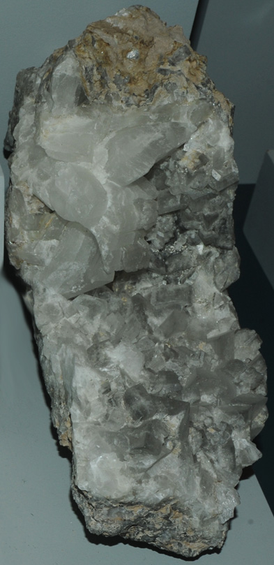

|

| CaB3O3(OH)5.H2O
This sample of inyoite is displayed in the Smithsonian Museum of Natural History. Inyoite is a oxide mineral of boron with calcium (a borate). Its composition is CaB3O3(OH)5.H2O. The sample at left is about 10 x 30 cm and is from Sorpresa, Pastos Grandes, Salta, Argentina.
|